Slide 4: مقدمة عن المُنشئ (Introduction to Constructors)
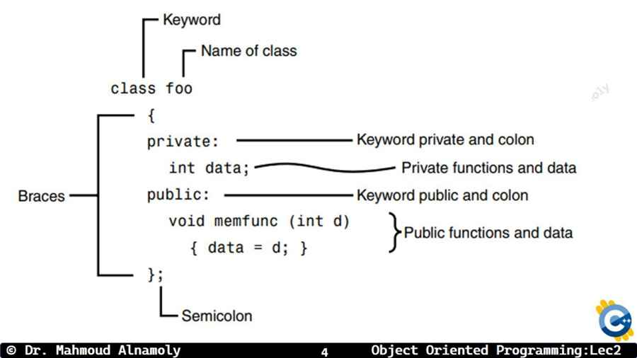
في المحاضرات اللي فاتت، عرفنا إن الـ Class هو مجرد قالب (Blueprint)، وإن الـ Object هو النسخة الحقيقية اللي بتاخد مساحة في الـ Memory.
السؤال هنا: إمتى وإزاي الـ Object ده بيتولد أو بيتخلق في الـ Memory؟ وإزاي بياخد قيم ابتدائية (Initial Values) لأول مرة؟
الإجابة هي الـ Constructor (المُنشئ أو الدالة البانية). الـ Constructor عبارة عن Special Member Function (دالة خاصة جداً) بيتم استدعاؤها (Called) بشكل تلقائي (Automatically) بمجرد ما حضرتك تكتب كود إنشاء الـ Object.
وظيفة الـ Constructor الأساسية هي تهيئة (Initialization) المتغيرات أو الداتا بتاعة الـ Object الجديد وإعطاؤه حياة فعلية في الذاكرة.
Slide 5: خصائص وقواعد الـ Constructor (Rules of Constructors)
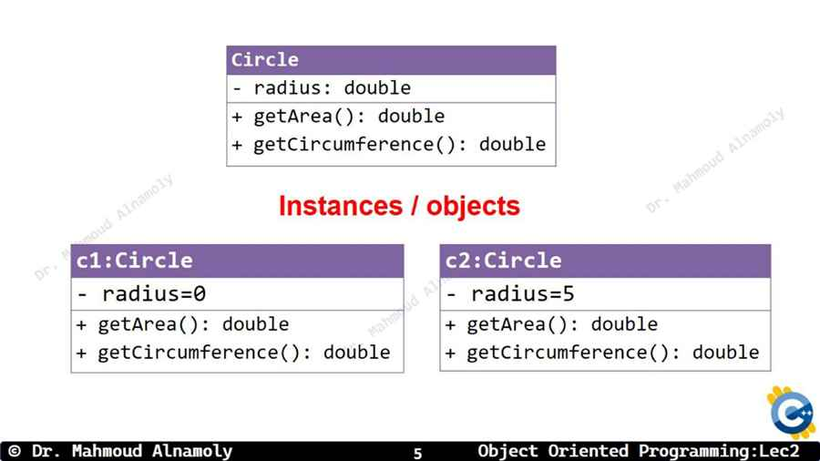
الـ Constructor مش دالة عادية، ليه 3 قواعد أو شروط صارمة لازم تحفظهم زي اسمك (بييجوا دايماً في الـ MCQs):
1. Same Name: اسم الـ Constructor لازم يكون نفس اسم الـ Class بالظبط (بنفس الحروف الـ Capital والـ Small).
2. No Return Type: الـ Constructor ملوش أي نوع إرجاع، حتى ولا كلمة void. مبنكتبش قبله أي حاجة.
3. Automatic Call: إنت كمبرمج مش بتنادي عليه بشكل صريح (You don't call it explicitly)، هو بيشتغل لوحده أوتوماتيك أول ما تعمل Object جديد.
4. Access Modifier: دايماً وأبداً لازم يكون محطوط في الـ public section، لأن الـ Main function هي اللي بتستخدمه عشان تبني الـ Object.
Slide 6: النوع الأول - المُنشئ الافتراضي (Default Constructor)
أول وأبسط نوع هو الـ Default Constructor. ده الـ Constructor الغلبان اللي مبياخدش أي Parameters (أقواسه فاضية).
وظيفته إنه بيدي قيم افتراضية (Default values) ثابتة لكل الـ Objects اللي بتتعمل منه (مثلاً يخلي أي Employee جديد يبدأ بمرتب 0 واسم فاضي).
⚠️ ملاحظة هامة جداً (Compiler Default): لو إنت نسيت أو متعمدتش تكتب أي Constructor في الكلاس بتاعك، الكومبايلر (Compiler) مش هيسكت، وهيكريتلك هو Hidden Default Constructor من وراك (فاضي مبيعملش حاجة) عشان بس يقدر يخلق الـ Objects. بس لو إنت كتبت أي Constructor بأيدك (حتى لو بياخد parameters)، الكومبايلر هيرفع إيده ومش هيعملك الـ Default.
Student() { : ده الـ Constructor. لاحظ إن اسمه Student (نفس اسم الكلاس بالظبط)، ومفيش قبله void ولا int، وأقواسه () فاضية مفيهاش Variables.
id = 0; و gpa = 0.0; : هنا بنعمل Initialization (تهيئة). يعني أي طالب جديد يتكريت هيكون رقم جلوسه صفر ودرجاته صفر بشكل مبدئي لحد ما نغيرهم.
Student s1; : في الـ main، أول ما السطر ده يتنفذ، الكمبيوتر هيطبع كلمة "Default Constructor Called!" أوتوماتيك من غير ما إحنا نكتب s1.Student().
Quiz 1: Constructors Basics
1. Which of the following statements about C++ Constructors is FALSE?
Correct Answer: C. A constructor must NOT have any return type whatsoever, not even 'void'.
2. What happens if a programmer does not define any constructor in their C++ class?
Correct Answer: A. If you don't write one, the compiler implicitly provides a hidden, empty Default Constructor for you.
Slide 8: النوع الثاني - المُنشئ بالمعاملات (Parameterized Constructor)
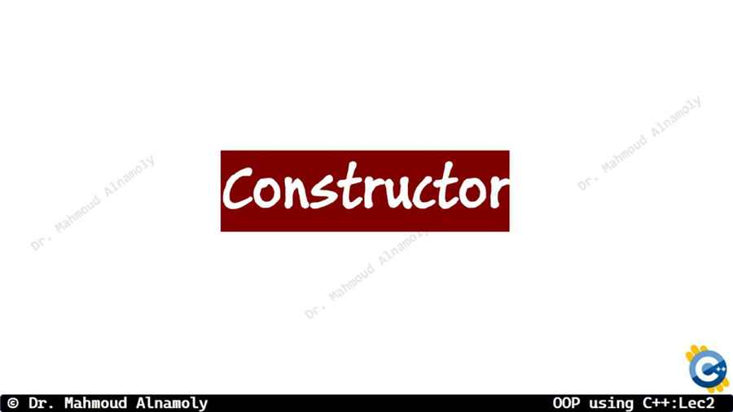
المشكلة في الـ Default Constructor إنه بيخلي كل الـ Objects تطلع شبه بعضها بالظبط بنفس القيم الأولية (الكل يبدأ بـ id = 0). لكن في الحقيقة، أنا عايز لما أجيب موظف جديد أقوله "خد إنت اسمك أحمد ومرتبك كذا" وأنا بكريته على طول.
هنا بنستخدم النوع التاني وهو الـ Parameterized Constructor. ده مُنشئ بياخد مدخلات (Parameters/Arguments) وإحنا بنعمل الـ Object.
الطريقة دي بتوفر علينا سطور كود كتير وبنعمل إنشاء (Creation) وتهيئة (Initialization) في سطر واحد بس (One-Step process).
مبدأ الـ Polymorphism اللي درسناه المحاضرة اللي فاتت بيظهر هنا بقوة في حاجة اسمها Constructor Overloading.
يعني إيه Overloading؟ يعني أقدر أعمل جوه نفس الـ Class أكتر من Constructor واحد!
إزاي الكومبايلر مش هيتلخبط وهم كلهم ليهم نفس الاسم (اسم الكلاس)؟ الكومبايلر ذكي وبيفرق بينهم عن طريق حاجة اسمها الـ Signature (التوقيع)، وهو عدد ونوع الـ Parameters اللي كل Constructor بياخدها.
فلو إنت بعت باراميترز وإنت بتعمل الـ Object هينادي الـ Parameterized، ولو مبعتتش حاجة خالص هينادي الـ Default.
Slide 11: كود الـ Overloading (Constructor Overloading Example)
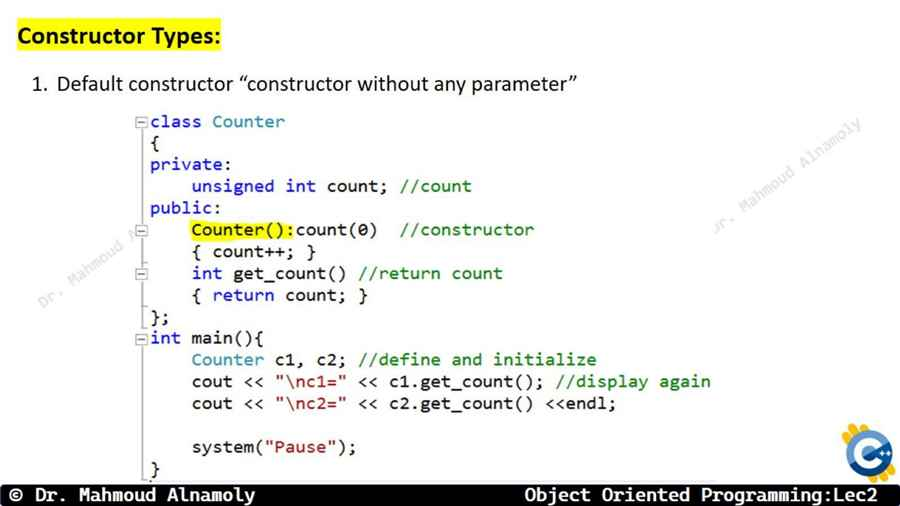
التطبيق العملي إننا نجمع الـ Default والـ Parameterized في كلاس واحد:
💡 نصيحة للمحترفين (Best Practice): دايماً عود نفسك أول ما تكتب كلاس وتكتب فيه Constructor بياخد Parameters (النوع التاني)، إنك لازم تكتب الـ Default Constructor الفاضي بإيدك (النوع الأول). ليه؟ لأننا قلنا إن الكومبايلر أول ما يلاقيك كتبت Constructor بيلغي الـ Default المجاني بتاعه. فلو حبيت بعدين تعمل Object فاضي (زي r1) البرنامج هيديك Error لأن الـ Default مبقاش موجود!
Slide 12: النوع الثالث - مُنشئ النسخ (Copy Constructor)
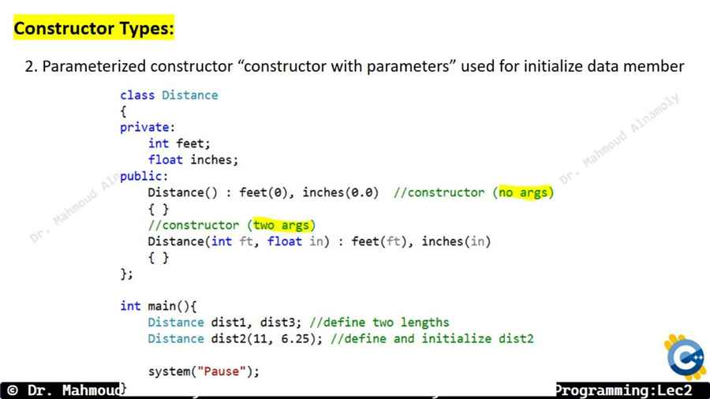
النوع التالت والأخير والمهم جداً هو الـ Copy Constructor (مُنشئ النسخ).
من اسمه، هو Constructor وظيفته إنه يعمل Object جديد بناءً على Object قديم موجود بالفعل. يعني كأنه بيعمل ماكينة تصوير (Photocopy) للـ Object الأولاني وياخد كل بياناته يحطها في الـ Object الجديد.
الـ Syntax بتاعه بيكون مميز، لأنه بياخد Reference (&) من Object تاني من نفس الكلاس كـ Parameter.
classBox {
private:
int size;
public:
// 1. Parameterized ConstructorBox(int s) {
size = s;
}
// 2. Copy ConstructorBox(constBox &old_box) {
size = old_box.size;
}
};
int main() {
Box b1(10); // Calls Parameterized ConstructorBox b2(b1); // Calls Copy Constructor! b2 is now a clone of b1Box b3 = b1; // This ALSO calls the Copy Constructor!
}
شرح الكود سطراً بسطر (Line-by-Line Analysis):
Box(constBox &old_box) { : ده الـ Copy Constructor! بياخد parameter من نوع Box نفسه، ولازم نبعته بالـ Reference & (عشان منعملش Infinite Loop من النسخ). وبنحط const عشان نضمن إننا منعدلش في الصندوق القديم واحنا بننسخ منه.
size = old_box.size; : بننقل الـ size بتاع الصندوق القديم للصندوق الجديد اللي بيتبني.
Box b2(b1); : في الـ main، إحنا بنعمل صندوق جديد b2 وبعتناله الصندوق b1 وهو بيتعمل. ده هيشغل الـ Copy Constructor.
Box b3 = b1; : دي طريقة تانية لكتابة الـ Copy Constructor. علامة الـ = هنا أثناء الإنشاء بتعتبر Copy Constructor مش مجرد (Assignment).
Quiz 2: Parameterized & Copy Constructors
1. In C++, Constructor Overloading means having multiple constructors in the same class. How does the compiler distinguish between them?
Correct Answer: C. The compiler uses the Parameter Signature (count and types of arguments) to resolve overloaded functions/constructors.
2. What is the standard parameter type for a Copy Constructor in a class named `Test`?
Correct Answer: B. A copy constructor must take a reference to an object of the same class, typically marked as `const`.
Slide 14: الهدم والإنهاء (Destructors)
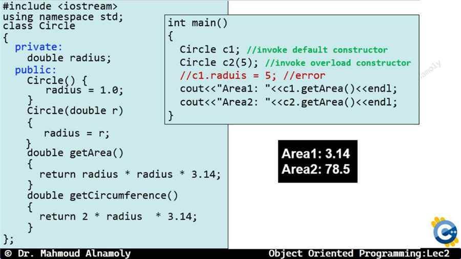
زي ما كل بداية ليها نهاية، وكل Object بيتولد بالـ Constructor، لازم الـ Object ده يموت ويتمسح من الميموري (Memory) عشان نوفر مساحة.
العملية دي بيقوم بيها الـ Destructor (الهدّام أو المُدمر).
الـ Destructor هو Special Member Function برضه، بيشتغل أوتوماتيك بس مش في بداية حياة الـ Object، لأ! ده بيشتغل في نهاية حياة الـ Object (End of Lifetime) أو لما البرنامج يخلص (Goes out of scope).
Slide 15: خصائص الـ Destructor (Rules of Destructors)
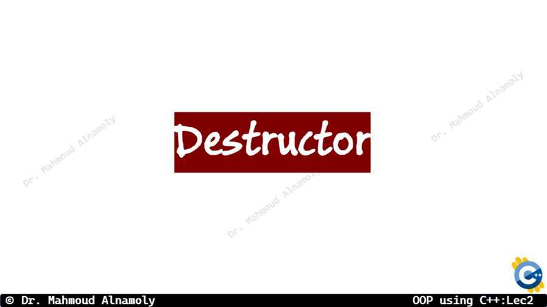
قواعد الـ Destructor شبه قواعد الـ Constructor بس مع اختلافات جوهرية عشان هو بيمسح مش بيبني:
1. Name with Tilde: اسمه بيكون نفس اسم الـ Class بالظبط، بس لازم يسبقه علامة الـ Tilde ~ (زي كده: ~Student()). دي اللي بتعرف الكومبايلر إنه Destructor.
2. No Return Type: برضه ملوش أي نوع إرجاع (No return type).
3. No Parameters (NO OVERLOADING!): الـ Destructor مستحيل ياخد Parameters أقواسه دايماً فاضية. وبما إنه مبياخدش Parameters، إذن مستحيل نعمل منه Overloading! الكلاس الواحد ملوش غير Destructor واحد فقططط.
4. Automatic Call: بيشتغل لوحده لما المتغير (Object) ينتهي عمره الافتراضي (مثلاً الدالة اللي هو اتعمل جواها تخلص وقوسها } يتقفل).
Slide 16: كود الـ Destructor و دورة الحياة (Lifetime Example)
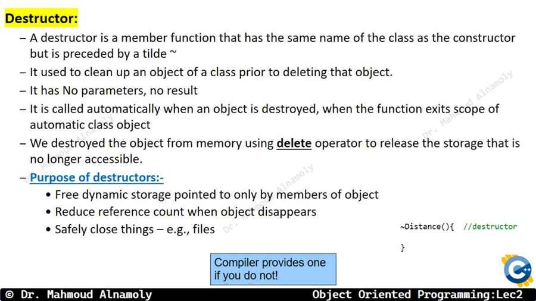
تعالوا نشوف كود بيجمع البناء والهدم مع بعض عشان نفهم الـ Flow بتاع البرنامج ماشي إزاي:
classTest {
public:
// ConstructorTest() {
cout << "Constructor Called!" << endl;
}
// Destructor (Notice the Tilde ~)
~Test() {
cout << "Destructor Called!" << endl;
}
};
int main() {
cout << "Main starts..." << endl;
{ // Start of an artificial Scope blockTest t1; // Object created -> Constructor called
cout << "Inside scope block" << endl;
} // End of scope -> Object t1 dies -> Destructor called AUTOMATICALLY
cout << "Main ends." << endl;
return0;
}
تحليل المخرجات (Output Analysis):
الطباعة هتكون بالترتيب ده:
Main starts... (لأن البرنامج بيبدأ من فوق).
Constructor Called! (لأننا كريتنا t1 جوه القوس).
Inside scope block (سطر طباعة عادي).
Destructor Called! (أول ما القوس الداخلي } اتقفل، الـ Object t1 مبقاش ليه لازمة وهيموت، فالـ Destructor بيشتغل ينضف مكانه).
Main ends. (البرنامج بيكمل عادي).
Slide 17: ترتيب استدعاء الـ Constructors و الـ Destructors
سؤال امتحانات 100%: لو عملت أكتر من Object ورا بعض، مين هيتهد الأول؟
قاعدة ذهبية: الـ Destructors بتشتغل بعكس ترتيب الـ Constructors.
المبدأ ده اسمه LIFO (Last In, First Out) اللي دخل الآخر، هو اللي هيخرج (يتهد) الأول. بالظبط زي لما ترص كتب فوق بعضها (ده الـ Constructor)، ولما تيجي تشيلهم عشان تنضف الترابيزة، هتشيل الكتاب اللي فوق خالص الأول (الـ Destructor).
Slide 18: مثال على الترتيب العكسي (LIFO Order Example)
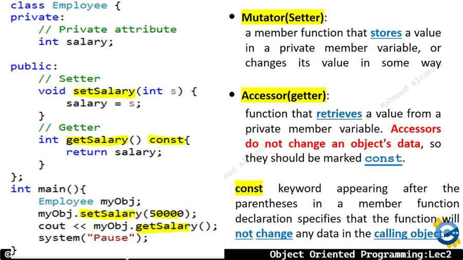
تعالوا نأكد على القاعدة دي بالكود:
int main() {
Test obj1; // 1st createdTest obj2; // 2nd createdTest obj3; // 3rd createdreturn0;
} // End of main() -> All objects go out of scope here
شرح الكود سطراً بسطر (Line-by-Line Analysis):
وهما بيتولدوا، الترتيب منطقي (من فوق لتحت): obj1 ثم obj2 ثم obj3.
لما الـ main تقفل } وكلهم يموتوا في نفس اللحظة، مين اللي هيتهد الأول؟
آخر واحد اتعمل هو أول واحد هيتمسح: obj3 هيتهد الأول، بعدين obj2، وفي الآخر خالص obj1.
Slide 19: الكائنات العامة والمحلية (Global vs Local Objects)
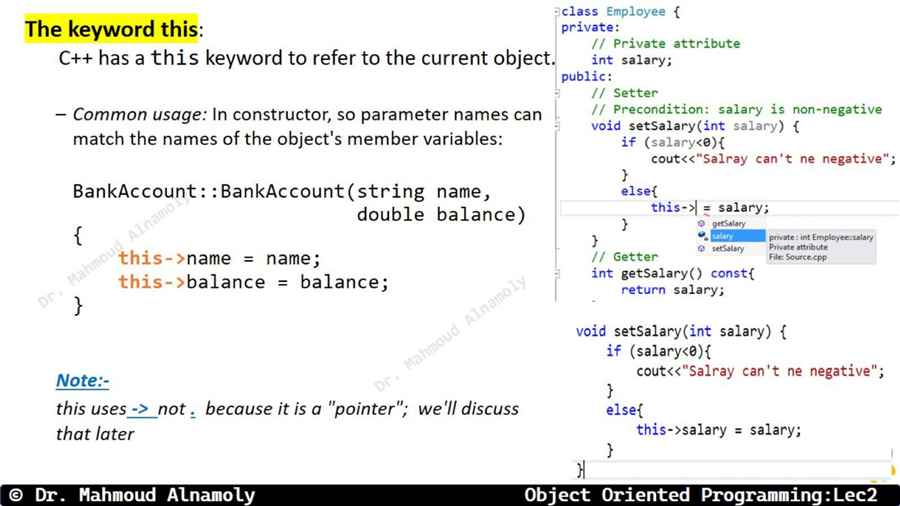
هنا بنزود مستوى التعقيد في الترتيب (Level Up). عندنا كذا نوع من الـ Objects على حسب مكان تعريفها:
Global Objects: الكائنات العامة اللي بتتعرف بره الـ main() خالص. دي أول حاجة بتتولد في البرنامج (قبل الـ main ما تبدأ أساساً!)، وهي آخر حاجة بتتهد في البرنامج لأنها عايشة طول فترة الـ Run.
Local Objects: الكائنات المحلية اللي جوه دوال زي main()، دي بتتولد لما الكود يوصلها، وتموت لما الدالة بتاعتها تقفل.
Static Local Objects: الكائنات اللي بنكتب قبلها كلمة static. دي بتتولد مرة واحدة بس (مش كل شوية)، ومش بتتهد لما الدالة تقفل! بتفضل عايشة وتتهد في نهاية البرنامج خالص مع الـ Global.
Slide 20: مثال شامل على الترتيب (Comprehensive Order Example)
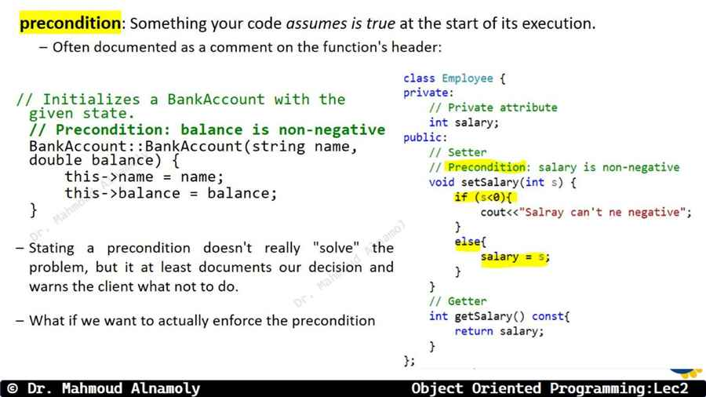
دي مسألة امتحان نموذجية جداً بتدمج الـ Global والـ Local مع بعض:
Test globalObj; // Global Objectvoid myFunc() {
Test localObj2; // Local to myFunc
}
int main() {
Test localObj1; // Local to main
myFunc();
return0;
}
الترتيب الصحيح للبناء (Constructors):
globalObj (لأنها Global، بتتنفذ قبل الـ main).
localObj1 (أول سطر في الـ main).
localObj2 (لما الـ main ندهت على myFunc()).
الترتيب الصحيح للهدم (Destructors):
localObj2 (أول ما myFunc() قفلت السكوب بتاعها، مات فوراً).
localObj1 (لما الـ main() قفلت).
globalObj (بعد ما البرنامج كله خلص).
Slide 21: الـ Destructors والميموري الديناميكية (Destructors and Dynamic Memory)
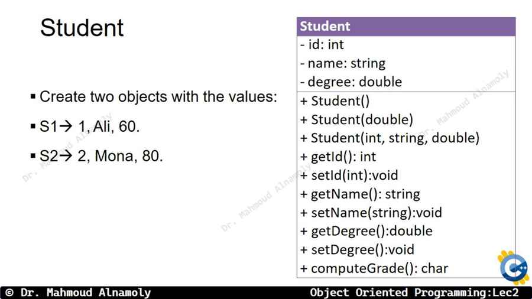
ممكن تسأل نفسك: ليه إحنا محتاجين الـ Destructor أصلاً؟ ما الكومبايلر بيمسح المتغيرات العادية لوحده في الآخر!
كلامك صح في المتغيرات العادية (زي int x). لكن الفايدة الوحيدة الحقيقية والأقوى للـ Destructor بتظهر لما تكون بتستخدم حاجة اسمها Dynamic Memory Allocation (حجز الذاكرة الديناميكي باستخدام Pointers و كلمة new).
في الـ Dynamic Memory، الكومبايلر مش بيمسح الميموري اللي إنت حجزتها بإيدك بكلمة new لما الـ Object يموت. الميموري بتفضل محجوزة على الفاضي وبتعمل كارثة اسمها Memory Leak (تسريب الذاكرة) واللي ممكن يعلق الجهاز كله!
الحل الوحيد هو إنك تيجي جوه الـ ~Destructor() وتكتب كلمة delete ptr; عشان تضمن إن أول ما الـ Object ينتهي، الميموري الديناميكية بتاعته تتنضف وتتحرر للسيستم تاني (Free Memory).
Slide 22: الخلاصة (Summary & Best Practices)
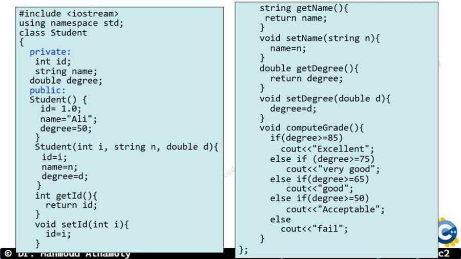
ملخص سريع (Quick Recap) لأهم النقاط في المحاضرة دي:
الـ Constructor بيبني ويهيء (Initialize)، اسمه نفس اسم الكلاس، ملوش Return، بيشتغل لوحده.
أنواع الـ Constructor: (Default فاضي)، (Parameterized بياخد مدخلات)، (Copy بينسخ Object كامل).
الـ Destructor بيهد وينضف الميموري (مهم جداً مع الـ Pointers)، اسمه قبله ~، ومفيش منه غير واحد بس لأنه مبيقبلش مدخلات.
ترتيب الهدم دايماً LIFO (Last In First Out) عكس ترتيب البناء.
Final Quiz: Destructors & Order
1. Which of the following is true about Destructors in C++?
Correct Answer: B. Destructors use the `~` symbol, take NO arguments, cannot be overloaded, and are called automatically.
2. If three local objects obj1, obj2, and obj3 are created in that specific order inside a block. What will be the order of their destruction when the block ends?
Correct Answer: C. Destructors are called in the exact reverse order of Constructors (LIFO - Last In First Out).
الملخص الشامل لأهم التريكات (Summary & Pro Tips)
Constructor = بنّاء: اسمه نفس اسم الكلاس بالظبط، ملوش Return Type (حتى ولا void)، وبيشتغل أوتوماتيك أول ما تعمل Object. ولازم يكون public.
3 أنواع Constructors: الـ Default (أقواسه فاضية ← قيم ثابتة)، الـ Parameterized (بياخد مدخلات ← قيم مخصصة)، والـ Copy (بياخد Reference لـ Object من نفس النوع ← ينسخه).
تريك الكومبايلر: لو مكتبتش أي Constructor، الكومبايلر بيعملك Default مجاني. بس لو كتبت أي Constructor بإيدك، المجاني بيختفي! عشان كده دايماً اكتب Default بإيدك.
Copy Constructor Syntax: دايماً بياخد const ClassName &obj (بالـ Reference وبالـ const). لو بعت بالـ Value هيعمل Infinite Loop!
Destructor = هدّام: اسمه نفس اسم الكلاس بس قبله ~ (Tilde). ملوش Parameters (إذن ملوش Overloading). الكلاس الواحد ملوش غير Destructor واحد بس. أهميته الحقيقية مع delete والـ Dynamic Memory.
قاعدة LIFO الذهبية: الـ Destructors بتشتغل بعكس ترتيب الـ Constructors. آخر Object اتعمل هو أول واحد هيتهد (Last In, First Out).
Global vs Local: الـ Global Objects بتتولد قبل الـ main وتموت بعد ما البرنامج كله يخلص. الـ Local بتموت أول ما السكوب بتاعها يقفل.
سؤال مقالي متوقع للامتحان (Essay Question)
Question: Compare and contrast the three types of Constructors in C++ (Default, Parameterized, Copy). For each type, explain its purpose, syntax, and when the compiler automatically invokes it. Also, explain the role of the Destructor and the LIFO rule for destruction order.
Model Answer:
C++ provides three types of constructors, each serving a distinct purpose:
1. Default Constructor: Takes no parameters. Its purpose is to initialize all data members to default/fixed values (e.g., 0 or empty string). Syntax: ClassName() { ... }. It is invoked when an object is declared without arguments (e.g., Student s;) or when creating an array of objects. If no constructor is explicitly defined, the compiler provides a hidden empty default constructor.
2. Parameterized Constructor: Takes one or more parameters to initialize data members with specific values provided at creation time. Syntax: ClassName(int x, float y) { ... }. It is invoked when arguments are passed during object creation (e.g., Student s(101, 3.5);).
3. Copy Constructor: Takes a const reference to an object of the same class and creates a new object as an exact copy. Syntax: ClassName(const ClassName &obj) { ... }. It is invoked when: (a) an object is initialized from another object, (b) an object is passed by value to a function, or (c) an object is returned by value from a function.
Destructor: A special function prefixed with ~ (e.g., ~ClassName()) that is automatically called when an object goes out of scope. It cannot take parameters (so no overloading is possible). Its primary purpose is to release dynamically allocated memory using delete to prevent Memory Leaks.
LIFO Rule: When multiple objects are created, their destructors are called in the exact reverse order of their constructors (Last In, First Out), similar to a stack of books.
Constructor Constructor Destructor Destructor (Constructors in order, Destructors in reverse LIFO order)
Q2:
classPoint {
public:
int x, y;
Point(int a, int b) { x = a; y = b; }
Point(constPoint &p) { x = p.x + 1; y = p.y + 1; }
};
int main() {
Point p1(3, 5);
Point p2 = p1;
cout << p2.x << " " << p2.y << endl;
}
4 6 (Copy Constructor adds 1 to each: 3+1=4, 5+1=6)
✍️ Write a line of code for the following statements
Q1: Write a Default Constructor for a class called Student that initializes id to 0 and name to "Unknown".
Student() { id = 0; name = "Unknown"; }
Q2: Write a Parameterized Constructor for Student that takes int i and string n.
Student(int i, string n) { id = i; name = n; }
Q3: Write a Copy Constructor for class Student.
Student(constStudent &obj) { id = obj.id; name = obj.name; }